帮助文档
首页：
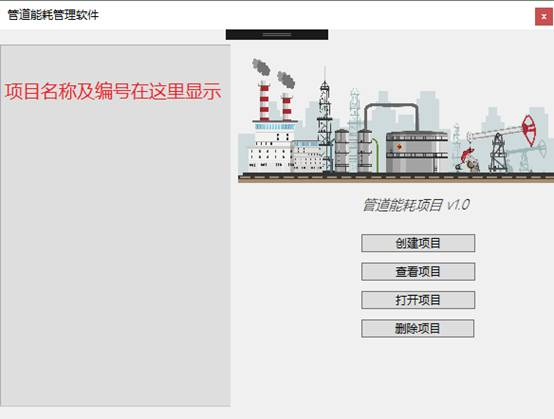
界面左边显示项目名称及编号，界面右边显示项目相关操作。
创建项目：
点击创建项目，显示创建界面：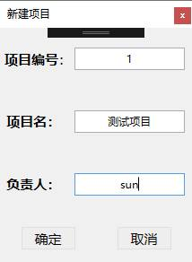，输入项目信息后点击确定即可创建，创建后进入主页面：
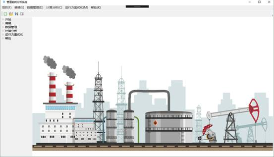
查看项目：
点击查看项目，显示项目信息：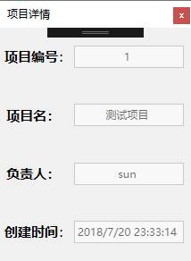
打开项目：
选择创建的项目，点击打开项目即可进入主页面：
删除项目：
选择所选项目，点击删除项目即可删除。
主窗口：
开始：
可以进行新建项目、打开项目、导出项目操作。
编辑：
可以进行项目编辑。
数据管理：
进行相关参数写入操作，以管道基础参数为例：
1）未添加数据时如下
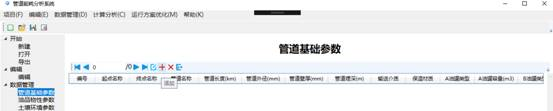
点击添加按钮，进入添加界面进行添加：
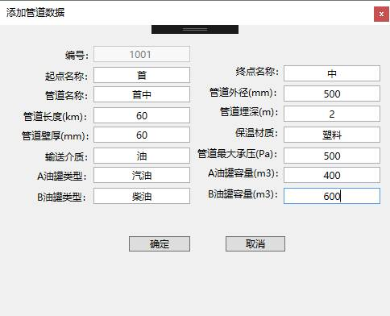
添加完成后点击确定，添加成功：
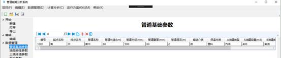
2）选择一行数据，点击编辑按钮进入编辑界面：
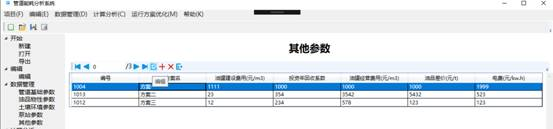
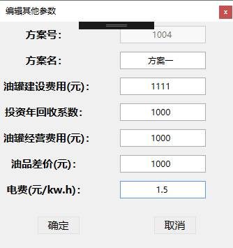修改电费后点击确定，编辑成功显示如下：

3）选择一行数据进行删除，点击删除按钮即可删除成功：
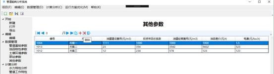
删除成功界面
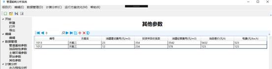
4）数据管理操作可参考以上数据操作
计算分析：
1）水力特性分析初始界面：
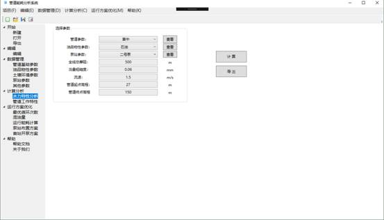
点击管道参数后的查看，显示相关信息：
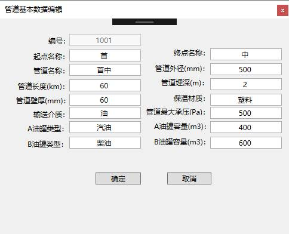
点击计算进行计算和折线图的绘制：
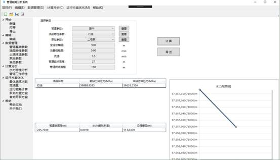
2)管道工作特性操作可参考水力特性分析操作
运行方案优化：
1）最优循环次数初始界面：
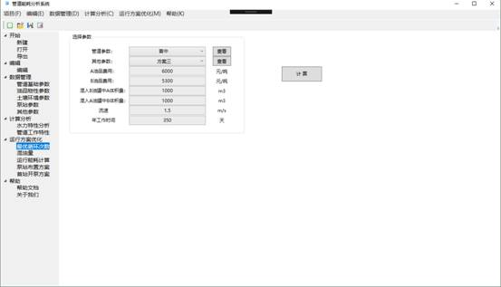
点击管道参数后的查看，显示相关信息：
点击计算，显示最优循环次数相关信息：
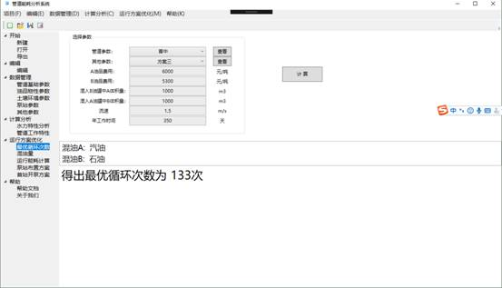
2）其他优化方案操作可参考最优循环次数进行操作
帮助：
1） 帮助文档，点击后显示帮助文档
2） 关于我们，点击后显示开发团队相关信息
开发团队：指尖改变世界